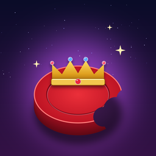

Checkers, reimagined. Every capture is a fight.
Play on a classic board, a beautiful 3D board, or with armies of monsters.
Demons vs Ghosts, Orcs vs Ninjas, Dinos vs Dragons, and every capture is a different finishing move.
Lose to the computer and watch the board meet a shark, a dragon, a meteor shower, a black hole and more.
Move diagonally forward one square. Jump over an opponent's piece to capture it, and keep jumping if you can. Reach the far side to be crowned a king, which can move backwards too. Capture or block all of your opponent's pieces to win. The app's How to Play screen has the full rules.
Use the 3D / 2D / Monsters switch at the top of the game screen. Choose your monster matchup in Settings → Monster teams.
Kingfall follows your iPhone's silent mode, so turn silent off and raise the volume. Also check that Sound & Haptics is on in the game's Settings.
Each background has its own ending, and it plays when the computer beats you. Pick a background in Settings and see what happens.
Yes: tap the grid button below the board to make the pieces float over the background. Tap it again to bring the board back.
No. There are no accounts, ads, analytics or tracking. See the privacy policy.
Found a bug, have an idea, or need help? Email us and we'll get back to you.
kingfall.support@gmail.com